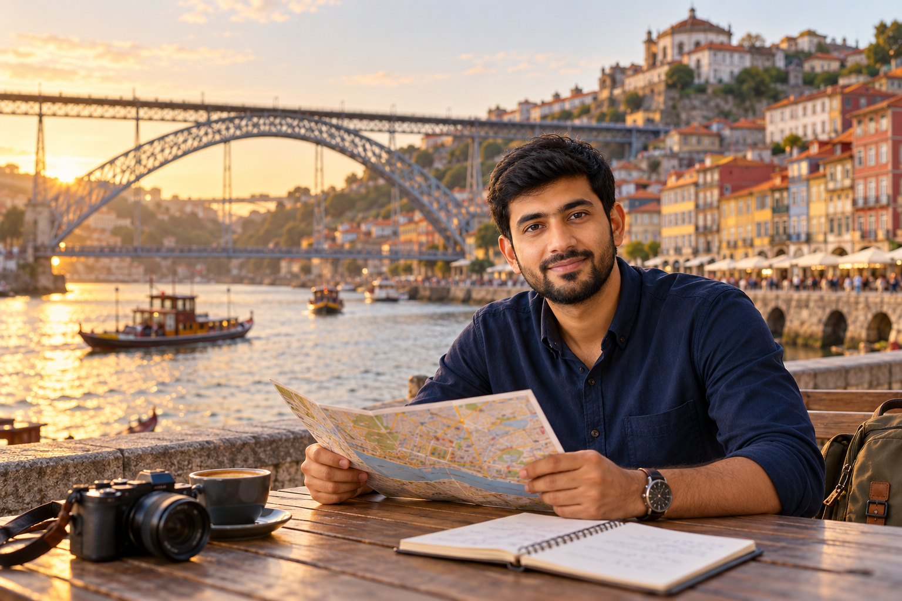

Portugal 7-Day Itinerary for First-Time Visitors
Seven days gives you enough time to experience more than Lisbon alone, but one week can still disappear quickly if you add too many stops. A first-time visitor may try to fit Lisbon, Sintra, Porto, the Douro Valley, Coimbra, and the Algarve into the same trip. On paper, that looks possible. In practice, too much of the week can disappear into hotel changes and long transfers.
When I build a one-week Portugal route for RoamPlans, I use Lisbon and Porto as the only hotel bases. Sintra works as a day trip from Lisbon, while the Douro Valley fits naturally from Porto. This gives you historic cities, palaces, river scenery, wine country, local food, and different regional experiences without changing accommodation every night.
Best 7-Day Portugal Itinerary at a Glance

This itinerary assumes you have seven useful travel days.
If Day 1 begins with a late arrival or Day 7 ends with an early flight, reduce optional activities rather than squeezing the entire schedule.
Why This 7-Day Portugal Route Works?
One week is long enough to add variety, but still short enough that every hotel change matters.
This route keeps the trip simple:
- Lisbon: 3 nights
- Porto: 4 nights
Sintra and the Douro Valley are visited without moving your luggage.
That gives you only one major hotel transfer during the whole week.
What Each Destination Adds?
Each place has a different role in the itinerary.
Lisbon
Lisbon gives you:
- Historic neighborhoods
- Riverfront areas
- Viewpoints
- Portuguese food
- Major monuments
- Easy access to Sintra
It also works well as the starting point after an international flight.
Sintra
Sintra adds:
- Palaces
- Gardens
- Forested hills
- Historic estates
- A different atmosphere from Lisbon
You return to your Lisbon hotel the same evening.
Porto
Porto adds:
- Douro River views
- Ribeira
- Historic streets
- Port wine culture
- Distinct local food
- Easy access to the Douro Valley
Giving Porto several nights means it feels like a destination rather than a quick stop.
Douro Valley
The Douro Valley gives the itinerary its main countryside experience.
It adds:
- River scenery
- Vineyards
- Wine estates
- Small settlements
- A slower day outside the cities
This creates more variety than adding another urban overnight stop.
Why the Algarve Is Not Included?
The Algarve is worth visiting, but it does not fit this particular seven-day route well.
Adding southern Portugal after Lisbon and before or after Porto would create another long transfer and another hotel base.
You would then have less time in every major stop.
For a beach-focused one-week trip, a better route would be:
Lisbon → Sintra → Algarve
That is a different itinerary with a different purpose.
For this page, the focus stays on:
Lisbon → Sintra → Porto → Douro Valley
Why Coimbra Is Not Included?
Coimbra lies between Lisbon and Porto, which makes it tempting to add on Day 4.
The problem is luggage and time.
A Coimbra stop would mean:
- Leaving Lisbon
- Arriving in Coimbra
- Storing luggage
- Sightseeing
- Returning for luggage
- Continuing to Porto
- Checking into another hotel
That turns your only major transfer day into another packed sightseeing day.
For a seven-day first visit, I would use those hours in Porto instead.
Should You Rent a Car?
You do not need a rental car for this itinerary.
The route can work using:
- Lisbon public transport
- Train between Lisbon and Sintra
- Train between Lisbon and Porto
- Porto public transport
- Organized or independent transport for the Douro Valley
This removes several extra concerns from the trip, including parking, tolls, and city driving.
A car becomes more useful if you redesign the trip around rural areas or independent road travel.
Best Hotel Split for One Week
Use two bases:
Lisbon: 3 Nights
This covers:
- Day 1 arrival and central Lisbon
- Day 2 full Lisbon sightseeing
- Day 3 Sintra
You leave for Porto on Day 4.
Porto: 4 Nights
This covers:
- Day 4 arrival in Porto
- Day 5 full Porto day
- Day 6 Douro Valley
- Day 7 final Porto time or departure
This split keeps your luggage movement low while still giving each region enough time.
Best Flight Setup
For this route, a point-to-point flight setup can save time:
- Arrive in Lisbon
- Depart from Porto
That means you do not need to return south at the end of the trip.
However, flight price still matters.
If a round-trip Lisbon ticket is much cheaper, compare that saving against the extra train journey and time needed to return from Porto.
The route can also be reversed if flights work better:
Porto → Douro Valley → Lisbon → Sintra
How the 7-Day Route Differs From the 5-Day Itinerary?
The extra two days should create more value, not just more free time.
Compared with a five-day trip, this itinerary gives you:
- More complete Porto sightseeing
- A full Douro Valley day
- A less pressured final day
That changes the experience.
You are not simply adding two empty days to the same route.
Who Is This Itinerary Best For?
This route suits:
- First-time visitors
- Couples
- Solo travelers
- Friends
- Small families
- Travelers who prefer trains
- Visitors interested in culture, food, history, and scenery
It works especially well for travelers who want variety without renting a car.
Day 1: Arrive in Lisbon and Explore the Center
Day 1 should introduce Lisbon without exhausting you.
If you are arriving from the United States after an overnight flight, you may still be dealing with:
- Jet lag
- Airport formalities
- Baggage
- Hotel check-in
- Time-zone adjustment
For that reason, keep the first day's route compact.
A practical order is:
Baixa → Praça do Comércio → Chiado
Arrive and Leave Your Luggage
After reaching central Lisbon, go to your accommodation.
If your room is not ready, ask whether luggage storage is available.
Do not carry your main bags through the city while sightseeing.
Once your luggage is handled, eat something and start walking when you feel ready.
Start in Baixa
Baixa is a good first area because it is central and easy to connect with nearby sights.
Use this first walk to get familiar with:
- Your hotel area
- Main streets
- Public transport
- River direction
- Nearby restaurants
You are learning how central Lisbon fits together.
Walk to Praça do Comércio
Continue toward the Tagus River.
Praça do Comércio gives you a broad open space beside the water and an easy first major landmark.
Take time to walk around rather than treating it as a quick photo stop.
Your first day does not need several paid attractions.
Continue to Chiado
From Baixa, continue toward Chiado.
This gives you:
- Cafés
- Shops
- Historic streets
- City atmosphere
- Easy evening options
If your energy is still good, walk a little farther.
If the flight has caught up with you, stop earlier.
The rest of the week matters more than forcing another two hours into Day 1.
Should You Ride a Historic Tram Today?
Only if it fits naturally into your route.
Do not spend a large part of the afternoon waiting for a famous tram when you are already tired.
Day 2 gives you more time in Lisbon's historic areas.
Day 1 Evening
Keep the evening flexible.
Good options include:
- Dinner near your hotel
- Short river walk
- One nearby viewpoint
- Café stop
- Early night
Avoid booking an expensive or difficult-to-replace activity for your arrival evening.
A flight delay should not damage the rest of the trip.
Day 1 Summary
Part of Day
Plan
Arrival
Airport → accommodation
First walk
Baixa
Next stop
Praça do Comércio
Later
Chiado
Evening
Dinner + optional short walk
Sleep
Lisbon
Day 2: Historic Lisbon and Belém
Day 2 is your main Lisbon sightseeing day.
Use two clear areas:
- Morning: Alfama and historic Lisbon
- Afternoon: Belém
This keeps the day organized and reduces unnecessary transport between unrelated places.
Morning: Start in Alfama
Begin your first full day in Lisbon's historic eastern center.
Alfama is best explored partly on foot.
Expect:
- Narrow streets
- Stairs
- Hills
- Old buildings
- Small squares
- Viewpoints
Wear comfortable walking shoes.
You will spend more time walking today than on Day 1.
Begin Near Lisbon Cathedral
The cathedral area is a practical starting point.
From here, work your way through Alfama rather than trying to follow every famous street on a checklist.
Allow some time simply to walk.
The small streets between landmarks are part of what makes this area worth visiting.
Choose One or Two Viewpoints
You do not need every famous Lisbon viewpoint.
Choose the ones that fit naturally into your route.
This saves time and prevents the morning from becoming a repeated cycle of climbing hills for similar views.
Decide Whether São Jorge Castle Is Worth Your Time
Include the castle if you care about:
- History
- Fortifications
- Elevated city views
Skip the interior if you would rather spend more time in Alfama and Belém.
Both choices work.
The itinerary does not depend on entering every famous attraction.
Have Lunch Before Belém
Take a proper break before moving west.
Choose a restaurant or café that fits your route.
Avoid spending too much time crossing Lisbon for one meal when you already have a full afternoon planned.
Afternoon: Explore Belém
Belém gives you a different side of Lisbon.
The area is known for major monuments linked to Portugal's maritime history.
Your main options include:
- Jerónimos Monastery
- Belém Tower
- Monument to the Discoveries
- Riverfront
- Pastel de nata stop
You do not need to enter all of them.
Make Jerónimos the Main Interior Visit
If you want one major interior experience in Belém, prioritize Jerónimos Monastery.
Then use the rest of the afternoon more flexibly.
This protects you from spending several hours moving between queues.
Walk Along the River
Give yourself some time without a ticketed attraction.
The riverfront connects several major sights and gives your day a slower section after the busy morning in Alfama.
Decide Whether to Enter Belém Tower
If the wait is short and the tower matters to you, visit.
If entry would take too much time, seeing the exterior can be enough for this itinerary.
Seven days gives you more time than a five-day trip, but that does not mean every hour needs another interior visit.
Add a Pastry Stop
Belém is an easy place to try a pastel de nata as part of the existing route.
You do not need to create a separate food stop elsewhere in the city for the same experience.
Evening Options
Return toward central Lisbon.
Choose one of these:
- Dinner
- Fado experience
- Short evening walk
- Quiet night before Sintra
If fado is important to you, Day 2 is a better option than after the long Sintra day.
Day 2 Summary
Part of Day
Plan
Morning
Alfama
Late morning
Castle area + selected viewpoint
Lunch
Central Lisbon
Afternoon
Belém
Later
Riverfront + pastry
Evening
Dinner or optional fado
Sleep
Lisbon
Prepare for Day 3 Before Bed
Sintra is the first day where timing matters more.
Before sleeping, confirm:
- Your train plan
- Pena Palace entry time
- Your second main attraction
- Weather
- Comfortable footwear
- Charged phone
Do not add more Sintra stops tonight.
Two major attractions plus time in the historic center will already give you a full day.
Day 3: Full Day Trip to Sintra
Day 3 moves outside Lisbon for the first time.
Sintra deserves a full day because the main attractions are spread across steep hills and wooded areas. Trying to combine it with Cascais or another destination would make this itinerary unnecessarily rushed.
For a first visit, a strong combination is:
Pena Palace + Quinta da Regaleira
These two attractions offer very different experiences and are enough to fill most of the useful sightseeing day.
Day 3 at a Glance
Part of Day
Plan
Early morning
Lisbon → Sintra
Morning
Pena Palace
Midday
Sintra historic center + lunch
Afternoon
Quinta da Regaleira
Late afternoon
Free time in Sintra
Evening
Return to Lisbon
Sleep
Lisbon
Leave Lisbon Early
Have breakfast before leaving and travel to Sintra in the morning.
Carry only a small day bag.
Useful items include:
- Water
- Comfortable shoes
- Phone
- Portable charger
- Light layer
- Rain protection when needed
Your luggage stays at the Lisbon hotel.
Make Pena Palace Your First Major Stop
Pena Palace is one of Sintra's main attractions and should receive a proper block of time.
Its hilltop location means you need to account for the trip from central Sintra to the palace area.
Do not schedule your morning so tightly that a small transport delay affects the entire day.
How Long Should You Spend at Pena Palace?
Give yourself around 2 to 3 hours for the palace and surrounding grounds.
You may spend less if you focus on the main palace areas.
You may spend longer if you enjoy:
- Architecture
- Gardens
- Photography
- Scenic viewpoints
Do not treat the palace as a quick photo stop.
What If You Prefer the Moorish Castle?
You can replace Quinta da Regaleira with the Moorish Castle if you prefer:
- Historic walls
- Outdoor walking
- Wide views
- Medieval ruins
This also keeps more of the day around the Sintra hills.
However, it involves more climbing.
For a first trip, Pena Palace and Quinta da Regaleira give you more contrast.
Lunch in Central Sintra
After the morning attraction, return toward Sintra's historic center.
Have lunch before starting the afternoon visit.
This is also a good time to try one of Sintra's traditional pastries.
Common local choices include:
- Queijadas
- Travesseiros
Keep lunch relaxed but not so long that it reduces your afternoon.
Walk Through Sintra's Historic Center
The center does not need a separate two-hour sightseeing block.
Use it naturally between lunch and your second major attraction.
Spend some time around:
- Narrow streets
- Small shops
- Historic buildings
- Cafés
Then continue.
Afternoon: Quinta da Regaleira
Quinta da Regaleira gives you a different style of visit from Pena Palace.
The estate is known for its:
- Gardens
- Decorative structures
- Tunnels
- Grottos
- Towers
- Initiation Well
The experience works best when you have enough time to explore instead of following the fastest route through the grounds.
How Long Should You Spend at Quinta da Regaleira?
Around 1.5 to 2 hours works for many visitors.
If you have already walked a lot at Pena Palace, slow the pace here.
There is no need to add a third major palace just because some time remains.
What to Do With Extra Time
If you finish earlier than expected, use the remaining time for:
- Coffee
- Pastry
- Historic center walk
- Small shop
- Relaxed break
Do not automatically add Cascais.
This itinerary already has a clear purpose for Day 3.
Return to Lisbon in the Early Evening
Travel back to Lisbon after your Sintra visit.
Tonight should stay simple because you leave Lisbon tomorrow.
Use the evening for:
- Dinner
- Packing
- Checking tomorrow's train details
- Rest
You have now completed the Lisbon section of the itinerary.
Day 4: Lisbon to Porto and First Look at the City
Day 4 is the main transfer day.
The goal is to reach Porto early enough to enjoy a useful afternoon without starting the morning at an unreasonable hour.
A direct morning train keeps the route simple.
Day 4 at a Glance
Part of Day
Plan
Morning
Lisbon → Porto
Around midday
Hotel + lunch
Early afternoon
Aliados
Afternoon
São Bento + Cathedral area
Late afternoon
Ribeira
Evening
Dom Luís I Bridge + Gaia
Sleep
Porto
Take a Morning Train to Porto
Choose a morning departure that allows you to reach Porto around midday or early afternoon.
You do not need to take the first train available.
A sensible departure gives you enough sleep and still protects the afternoon.
Pack the night before so you are not reorganizing luggage in the morning.
Check Your Exact Lisbon Station
Lisbon has several railway stations.
Your ticket tells you where your train departs.
Check the station before leaving the hotel.
This small step can prevent an unnecessary rush on the only major transfer day.
Arrive in Porto and Leave Your Luggage
Once you reach Porto, go to your accommodation first.
If the room is not ready, ask about luggage storage.
Do not start exploring Porto with your suitcase.
The historic center includes slopes, steps, and uneven streets.
Have Lunch Before Sightseeing
Eat near your hotel or the beginning of your route.
The afternoon is built around walking downhill through central Porto toward the river.
A useful order is:
Aliados → São Bento → Cathedral → historic streets → Ribeira
This gives the afternoon a natural flow.
Start Around Avenida dos Aliados
Begin in central Porto.
This area helps you understand the city before moving toward the river.
You do not need a long stop.
Use it as the beginning of your walking route.
Visit São Bento Station
São Bento is worth a short stop for its famous tile-covered interior.
Because it sits along the route toward the historic center, visiting it does not require a separate detour.
Spend enough time to appreciate the main hall, then continue.
Continue Toward Porto Cathedral
The cathedral area gives you a higher position above the historic center.
From here, you begin moving gradually toward the Douro River.
If you want to enter the cathedral, allow extra time.
If not, the surrounding area still fits well into the route.
Walk Through the Historic Center
Continue downhill through Porto's older streets.
This part of Day 4 should remain flexible.
Look for:
- Historic facades
- Small squares
- Churches
- Local businesses
- River views
You already spent the morning traveling.
There is no reason to fill the afternoon with several long indoor visits.
Reach Ribeira in the Late Afternoon
Ribeira is where Day 4 should slow down.
Walk beside the Douro and spend some time around the riverfront.
This is one of the areas where Porto feels most different from Lisbon.
Rather than leaving after one photo, give yourself time to explore the streets close to the water.
Cross Dom Luís I Bridge
If your energy is still good, cross toward Vila Nova de Gaia.
The bridge connects Porto with another major part of the city's river experience.
From the Gaia side, you can look back toward:
- Ribeira
- Porto's hillside
- Douro River
- Historic buildings
This is a strong way to finish your first afternoon.
Evening in Gaia or Ribeira
Keep dinner close to the river.
You can choose between:
- Ribeira
- Gaia
- A central area on the way back to the hotel
Do not book a long evening tour unless it is one of your personal priorities.
You have a full Porto day tomorrow.
Day 5: Full Day in Porto
Day 5 is different from yesterday.
Day 4 introduced Porto from the historic center down to the Douro.
Today focuses on the parts of central Porto you have not properly explored yet.
A practical order is:
Bolhão → Santa Catarina → Clérigos → Carmo → afternoon choice
Day 5 at a Glance
Part of Day
Plan
Morning
Bolhão + Santa Catarina
Late morning
Clérigos
Lunch
Central Porto
Early afternoon
Carmo + nearby streets
Afternoon
Port wine OR gardens
Evening
Final central Porto walk
Sleep
Porto
Start at Mercado do Bolhão
Begin the day around Bolhão Market.
This gives you a local food-focused start without needing a separate food tour.
Spend time looking at:
- Produce
- Food stalls
- Regional products
- Market activity
You may also have breakfast or coffee nearby.
Walk Rua de Santa Catarina
Continue along Rua de Santa Catarina.
This busy commercial street connects easily with other central sights.
You may pass tiled churches and traditional storefronts along the way.
Do not turn every building into a scheduled stop.
Today works better as a continuous city walk.
Continue Toward Clérigos
The Clérigos area becomes your main late-morning destination.
If you want a city panorama, you can climb the tower.
If stairs are becoming tiring after several days of walking, skip the climb.
You will already have seen Porto from several elevated positions during the trip.
What About Livraria Lello?
Visit if the bookstore's architecture or literary history matters to you.
Skip it if you are interested only because it appears on every Porto itinerary.
Popular attractions consume both time and attention.
Your final choice should reflect your interests.
Walk Toward the Carmo Area
After Clérigos, continue through the streets around Carmo.
This section gives you more historic architecture without requiring a long transfer.
Take time to notice the city between the major landmarks.
This slower section keeps Day 5 from becoming another list of ticketed attractions.
Have a Proper Porto Lunch
Today is a good day to try a Porto-specific dish.
One well-known option is francesinha.
It is filling, so it may work better when you have a lighter afternoon planned.
Other travelers may prefer:
- Seafood
- Cod dishes
- Petiscos
- Simple Portuguese lunch
Choose based on your appetite rather than treating one dish as compulsory.
Choose One Main Afternoon Experience
The afternoon should have one main focus.
Do not try to complete every remaining Porto activity.
Option 1: Port Wine Experience in Gaia
Choose this if port wine is part of why you wanted to visit Porto.
A cellar experience can introduce:
- Different port styles
- Aging
- Production
- Douro wine connection
One good visit is enough.
There is little value in spending the entire afternoon moving from one cellar to another unless wine is the main purpose of your trip.
Option 2: Palácio de Cristal Gardens
Choose the gardens if you want a quieter afternoon.
This option gives you:
- Green space
- River views
- Less structured walking
- Time away from crowded streets
It can be a good choice after several active sightseeing days.
Option 3: More Historic Porto
If you prefer architecture and history, use the afternoon for one major interior you skipped earlier.
Possible choices include:
- Palácio da Bolsa
- São Francisco Church
- Another historic building that interests you
Choose one.
Do not spend the afternoon entering buildings simply because they are close together.
Which Afternoon Option Fits You?
Your Main Interest
Best Choice
Port wine
Gaia cellar
Relaxed scenery
Gardens
History
Historic interior
Photography
Gardens or Gaia
Fewer reservations
Gardens
Local wine culture
Gaia
Evening: Keep Porto Flexible
Return to the area you liked most.
You may want:
- Ribeira dinner
- Gaia riverfront
- Central Porto restaurant
- Evening walk
Day 6 leaves the city entirely for the Douro Valley.
That makes tonight a good time to enjoy Porto without another fixed schedule.
Prepare for the Douro Valley
Before going to sleep, confirm tomorrow's plan.
If you booked an organized tour, check:
- Meeting point
- Departure time
- Included meals
- Transport
- Return time
If you are traveling independently, confirm the transport that fits your chosen Douro stops.
Do not decide the entire Douro day after breakfast.
It is the most logistically different day of this itinerary.
Day 6: Douro Valley Day Trip From Porto
Day 6 changes the pace of the trip.
After several days in Lisbon, Sintra, and Porto, the Douro Valley gives you a full day of river scenery, terraced vineyards, wine estates, and smaller communities.
For a first seven-day Portugal trip, I would keep Porto as your base and visit the Douro without changing hotels.
Day 6 at a Glance
Part of Day
Plan
Early morning
Leave Porto
Morning
Travel into the Douro Valley
Late morning
Vineyard or wine estate
Lunch
Regional lunch
Afternoon
Pinhão + river experience or second scenic stop
Late afternoon
Return toward Porto
Evening
Easy dinner
Sleep
Porto
Tour or Independent Trip: Which Is Better?
Both can work.
For this particular seven-day itinerary, an organized small-group tour is often the easier option for a first-time visitor.
It can combine:
- Transport
- Vineyard visit
- Wine tasting
- Lunch
- Scenic stops
- River experience
This removes the need to coordinate several separate connections.
Choose an Organized Tour If You Want:
- A simple one-day plan
- A winery visit without driving
- Several Douro experiences in one day
- Less transport planning
Travel Independently If You Want:
- More control over your schedule
- A scenic train ride
- More time in one place
- Fewer structured activities
Neither approach is automatically better.
Choose based on what you want from the day.
Independent Douro Option: Porto to Pinhão
Pinhão is one of the most practical bases for an independent Douro day.
The train route follows sections of the river and becomes part of the experience.
Once in Pinhão, you can build a simple day around:
- Riverfront
- Railway station
- Lunch
- One nearby wine experience
- Short boat trip if available and useful
This works best when you do not try to cover the entire valley.
Do Not Try to See the Whole Douro Valley in One Day
The Douro is a region, not one attraction.
A first-time day trip does not need:
- Several towns
- Three wine estates
- Multiple viewpoints
- Long boat trip
- Full restaurant experience
- Late-night return
Choose a small number of meaningful experiences.
For example:
Scenic transport + one winery + lunch + Pinhão + short river experience
That is already a full day.
Make One Wine Estate the Main Experience
If wine interests you, include one proper estate visit.
A good visit can help you learn about:
- Douro vineyards
- Grape growing
- Port production
- Table wines
- Harvest traditions
- Regional history
One detailed visit is more useful than rushing through several tastings.
If you do not drink alcohol, the valley can still be worth visiting for scenery, food, river views, and regional culture.
Give Lunch Proper Time
Day 6 should not feel like an attraction race.
A regional lunch can be part of the experience rather than a break between activities.
If your tour already includes lunch, check what is covered before planning anything else.
Independent travelers should leave enough time to eat without watching the clock every few minutes.
Pinhão Works Well as the Center of the Day
Pinhão sits beside the Douro and is closely tied to the surrounding wine region.
One of its most recognizable features is the railway station with traditional tile panels showing scenes connected with wine production.
You do not need a long sightseeing checklist here.
Use Pinhão as a place to:
- Walk near the river
- See the station
- Eat
- Join a local experience
- Slow the day down
Should You Take a Douro River Cruise?
A short river trip can fit well.
The view from the water gives you another perspective on the valley.
However, choose the cruise based on the rest of your day.
If your schedule already contains:
- Long transport
- Winery
- Full lunch
- Several scenic stops
you may not need another long activity.
A short river experience is usually easier to fit than a full-day cruise from Porto.
What About Régua?
Peso da Régua is another important Douro location.
You may pass through or stop there depending on your transport or tour.
For this seven-day itinerary, do not feel required to explore both Régua and Pinhão in depth.
Choose the location that fits your actual schedule.
Driving the Douro Yourself
A rental car gives you more control over viewpoints and smaller places.
It also adds:
- Navigation
- Parking
- Winding roads
- Responsibility around wine tasting
If you plan to drink wine, independent driving creates an obvious limitation.
For a single Douro day inside this itinerary, train or organized transport is usually simpler.
Return to Porto Without Planning Another Major Activity
After a full Douro day, keep the evening easy.
Have dinner near your accommodation or in an area you already know.
This is not the night to add several Porto attractions you missed earlier.
You still have Day 7.
Day 7: Final Porto Day
Your final day should not repeat Day 5.
You have already seen much of central Porto.
Use Day 7 for one experience that gives the trip a different ending.
For most travelers, I would choose between:
- Foz do Douro and the Atlantic coast
- or
- more time in Gaia and along the river
Your departure time may make the decision for you.
Option 1: Foz do Douro
Choose Foz if you want a final change of scenery before leaving Portugal.
This area takes you toward where the Douro meets the Atlantic.
It gives you:
- Coastal walking
- Ocean views
- A more residential feel
- Cafés
- A quieter final few hours
After six days of major sights, this can be a good way to finish.
What to Do in Foz
Keep the plan simple.
You can:
- Walk along the waterfront
- Stop for coffee
- Have lunch
- Spend time near the ocean
- Return to central Porto when ready
Do not create another packed attraction schedule.
The value comes from having a slower final experience.
Option 2: Return to Gaia
Choose Gaia if you did not have enough time there earlier.
You could use Day 7 for:
- Riverfront walk
- One port wine experience
- Cable-car area if it interests you
- Lunch with Porto views
- Final photographs across the Douro
This works especially well if Day 5 was spent in the gardens or historic center rather than at a wine cellar.
Option 3: Keep the Day in Central Porto
If your flight leaves later but you do not want another transport ride, stay central.
Use the final hours for places you intentionally skipped.
This may include:
- One museum
- One historic interior
- Café
- Shopping
- Long lunch
- Favorite neighborhood
Choose based on what you enjoyed most during the week.
Do Not Use Day 7 to Fix Every Missed Attraction
A normal trip will always leave something unseen.
That is fine.
If you missed:
- One church
- One viewpoint
- One bookstore
- One market
you do not need to squeeze all of them into the final morning.
Protect the last day from becoming the busiest day of the trip.
If You Fly Home on Day 7
Your flight time controls how much sightseeing is realistic.
Early Morning Flight
Treat Day 6 as your final sightseeing day.
Do not plan Day 7 activities.
Afternoon Flight
Stay near central Porto.
A short breakfast, market visit, café, or river walk is enough.
Then collect your luggage and leave for the airport.
Evening Flight
You can use much of the day.
Foz, Gaia, or a relaxed central Porto plan can all work.
Avoid any activity that makes your airport transfer dependent on a tight return time.
What If You Need to Return to Lisbon?
If your flight home leaves Lisbon, Day 7 changes.
Do not plan a full Porto sightseeing day and then make a stressful connection south.
A safer structure is:
- Morning: Porto
- Midday or early afternoon: train to Lisbon
- Later: Lisbon airport or final Lisbon night
The exact setup depends on your flight time.
If your international flight leaves Lisbon early on Day 8, spending your final night near Lisbon can reduce stress.
Complete Portugal 7-Day Itinerary
Here is the full week in one place.
The itinerary gives you:
- 2 hotel bases
- 1 major hotel change
- 2 full-day trips
- 3 nights in Lisbon
- 4 nights based in Porto
That is enough variety for one week without turning the trip into constant movement.
How Much Time Goes to Each Place?
The route gives roughly:
Lisbon
About two city days plus three nights.
Sintra
One full day.
Porto
Part of Day 4, all of Day 5, and part or all of Day 7.
Douro Valley
One full day.
This balance is intentional.
Lisbon gets enough time for its main first-trip areas.
Porto gets more room than it would on a five-day trip.
The Douro adds a regional experience rather than another city.
What to Book Before the 7-Day Trip
You do not need to reserve every hour.
Focus on the parts that can affect the structure of the route.
Consider arranging:
- Flights
- Lisbon hotel
- Porto hotel
- Lisbon–Porto train
- Pena Palace entry
- Second Sintra attraction if required
- Douro tour or winery if using one
- A high-priority Porto experience
Leave normal meals, neighborhood walks, and flexible sightseeing open where possible.
What Should Stay Flexible?
Keep these parts open:
- Day 1 evening
- Some of Day 2
- Sintra extra time
- Day 5 afternoon if no reservation is needed
- Day 7
- This gives the itinerary room to handle:
- Weather
- Tiredness
- Delays
- A place you enjoy more than expected
A seven-day schedule should guide the trip without controlling every hour.
How to Adjust This Itinerary for Different Travelers
If You Care More About Beaches
Replace Porto and the Douro section with the Algarve.
A beach-focused week could use:
Lisbon → Sintra → Algarve
Do not try to keep every destination.
If You Do Not Care About Wine
Keep the Douro Valley if the scenery interests you.
Use the day for:
- Train ride
- Pinhão
- River views
- Regional lunch
- Short boat trip
If the valley does not interest you at all, use Day 6 for another Porto day or a different nearby destination.
If You Prefer Slow Travel
Remove the Douro Valley.
Use the extra day in Porto.
That creates more room for:
- Neighborhoods
- Museums
- Foz
- Gaia
- Long meals
You still get a complete one-week Portugal trip.
If You Love Wine
Keep Day 6 for the Douro and make it one of the main experiences of the week.
Then choose a different Porto activity on Day 5 rather than stacking wine tastings on both days.
If You Are Traveling With Children
Reduce the number of long interior visits.
Keep:
- Riverfront walks
- Gardens
- Sintra highlights
- Shorter attraction blocks
A family itinerary does not need to follow every adult sightseeing stop.
If Walking Is Difficult
Portugal's hills can change the pace of this route.
Use:
- Taxis
- Metro
- Local transport
- Fewer viewpoints
Keep the main destinations but reduce unnecessary walking between them.
5 Days vs 7 Days in Portugal
Seven days gives you a noticeably different trip from five.
5 Days
7 Days
Lisbon
Lisbon
Sintra
Sintra
Porto
Porto
Limited Porto time
More complete Porto time
No regional day needed
Douro Valley fits
Faster pace
Better balance
If your schedule allows seven days, the extra time is most useful in northern Portugal.
You do not need to fill it with another hotel base.
Frequently Asked Questions About a 7-Day Portugal Itinerary
Is 7 days enough for Portugal?
Yes. Seven days is enough for a focused first trip covering Lisbon, Sintra, Porto, and the Douro Valley without needing a rental car.
How many places should I visit in Portugal in one week?
Two main hotel bases work well. Lisbon and Porto can act as bases for Sintra and the Douro Valley.
How many days should I spend in Lisbon?
Three nights works well for this route. It gives you an arrival day, one full Lisbon day, and one Sintra day trip.
How many days should I spend in Porto?
Four nights based in Porto gives you time for the city, the Douro Valley, and a flexible final day.
Can I visit Lisbon, Porto and the Algarve in 7 days?
It is possible, but the route becomes much faster. For this first-time itinerary, I would choose either Porto or the Algarve rather than trying to give all three regions proper time.
Is the Douro Valley worth visiting on a 7-day trip?
Yes, if scenery, regional food, wine culture, or river landscapes interest you. One week gives you enough time to include it without cutting your main Lisbon days.
Can I visit the Douro Valley without a tour?
Yes. An independent train-based trip to Pinhão is possible. A tour is easier if you want transport, a winery, lunch, and several stops combined into one day.
Do I need a rental car for one week in Portugal?
Not for this route. Lisbon, Sintra, Porto, and the Douro Valley can all be visited without renting a car.
Should I visit Coimbra during this itinerary?
I would leave it out. Adding Coimbra on the Lisbon–Porto transfer day creates another stop and reduces your Porto time.
Should I fly into Lisbon and out of Porto?
It can be a very efficient setup because it avoids returning to your starting city. Compare the flight cost with a Lisbon round trip before booking.
Conclusion
When I build a seven-day Portugal itinerary for a first-time visitor, the extra time should improve the trip rather than increase the number of hotel changes. Lisbon, Sintra, Porto, and the Douro Valley give you four distinct experiences while keeping the route based around only two hotels.
The strongest part of this plan is its balance. You get major city sights, a palace day, northern Portugal, river scenery, and one slower regional experience without trying to cover the whole country in a week. That makes seven days long enough to feel varied while still keeping the route realistic.